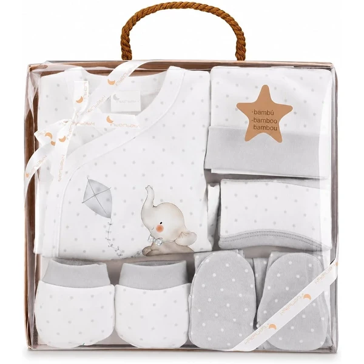
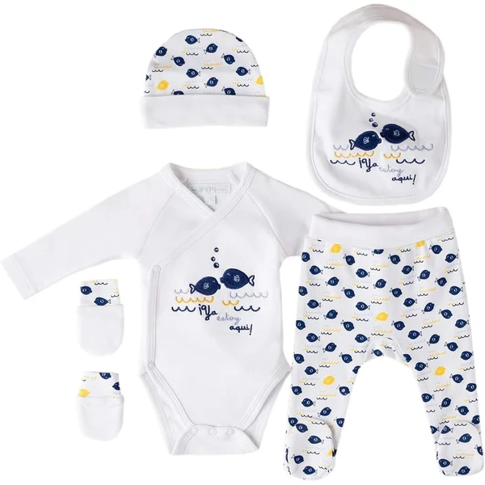
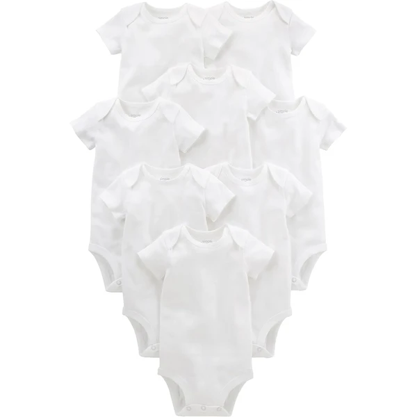
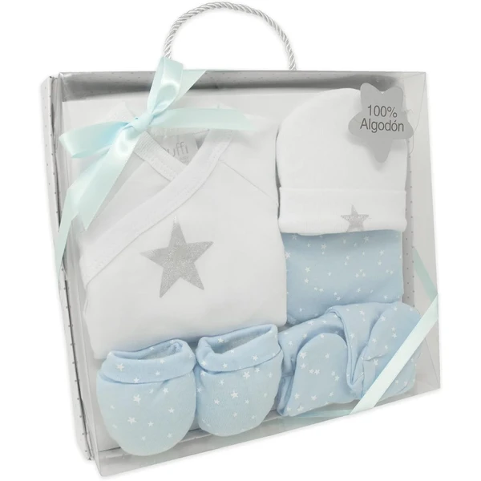
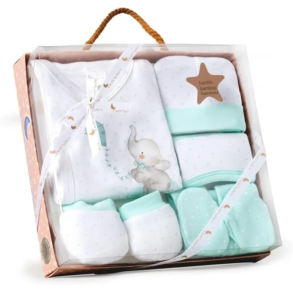
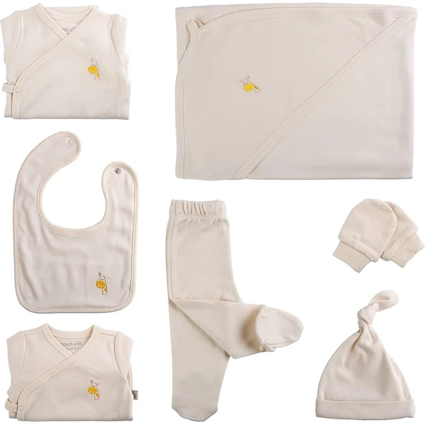

Set primera puesta Elefantito Various
Un conjunto de 5 piezas para el recién nacido (chaquetita, polaina, gorro, babero y manoplas) en bambú y algodón, con estampado de elefantito en tonos grises. Presentado en una caja tipo regalo, lista para el hospital o la canastilla.
⭐ ¿Por qué nos gusta?
- ✔ Cinco piezas esenciales en un mismo set.
- ✔ Tejido suave de bambú y algodón.
- ✔ Presentación en caja, lista para regalar.
💬 Lo que más destacan las familias
Muchos padres coinciden en que el tejido de bambú es mucho más suave de lo que esperaban, algo que se nota especialmente en la piel tan sensible del recién nacido. También gusta que venga presentado en caja, listo para regalar sin envolver nada más.
Ver en Amazon

Set primera puesta Amomí
Un conjunto de 5 piezas de algodón 100% para el recién nacido, en talla única. Pensado como base sencilla de ropa para los primeros días en casa o en el hospital.
⭐ ¿Por qué nos gusta?
- ✔ Cinco piezas de algodón 100%.
- ✔ Talla única, fácil de elegir.
- ✔ Opción sencilla para completar la canastilla.
💬 Lo que más destacan las familias
Una de las cosas más comentadas es lo bien que sienta el algodón, suave y nada áspero para la piel del bebé. También se valora tener las piezas básicas resueltas de una sola vez, sin tener que comprar por separado.
Ver en Amazon

Pack 8 bodies Simple Joys by Carter's
Un pack de ocho bodies de manga corta unisex, pensados como prenda básica bajo la ropa del recién nacido. Una opción práctica para tener siempre bodies limpios a mano.
⭐ ¿Por qué nos gusta?
- ✔ Pack de ocho unidades, ideal para el día a día.
- ✔ Diseño unisex, fácil de combinar.
- ✔ Manga corta, cómodo para llevar bajo otra ropa.
💬 Lo que más destacan las familias
Los compradores valoran especialmente tener siempre bodies limpios a mano, algo que se agradece mucho en las primeras semanas con tantos cambios al día. El corte unisex también gusta porque no obliga a decidir el color de antemano.
Ver en Amazon

Set primera puesta Estrella Duffi Baby
Un conjunto de 5 piezas de algodón 100% con estampado de estrellas metalizadas en azul y blanco: chaquetita, polaina, gorro, babero y manoplas. Se presenta en una caja con asa, lista para regalar.
⭐ ¿Por qué nos gusta?
- ✔ Cinco piezas esenciales de algodón 100%.
- ✔ Diseño de estrellas metalizadas.
- ✔ Caja con asa, lista para regalar.
💬 Lo que más destacan las familias
Entre los comentarios más habituales aparece lo bonito que queda el estampado de estrellas, más vistoso que otros sets básicos. La caja con asa también se menciona como un acierto para regalar sin necesidad de envoltorio extra.
Ver en Amazon

Set primera puesta Elefantito Interbaby
Un conjunto de 5 piezas de algodón 100% en tonos verde menta con estampado de elefantito: manoplas, babero, gorro, camisa y polainas. Presentado en una caja lista para regalar.
⭐ ¿Por qué nos gusta?
- ✔ Cinco piezas esenciales de algodón 100%.
- ✔ Tonos verde menta, unisex.
- ✔ Caja de regalo incluida.
💬 Lo que más destacan las familias
Se repite bastante el comentario de que el tono verde menta encaja bien tanto si es niño como si es niña, algo que se agradece cuando aún no se conoce el sexo del bebé. También gusta que llegue todo junto en su propia caja de regalo.
Ver en Amazon

Set primera puesta orgánico ORGANICKID
Un conjunto de 7 piezas de algodón orgánico certificado GOTS, pensado como base completa de ropa para el recién nacido, unisex. Una opción con materiales certificados para quienes buscan prendas más naturales.
⭐ ¿Por qué nos gusta?
- ✔ Siete piezas en un mismo set.
- ✔ Algodón orgánico certificado GOTS.
- ✔ Diseño unisex, apto para niño o niña.
💬 Lo que más destacan las familias
No es raro encontrar comentarios sobre lo tranquilos que se quedan los padres al saber que el algodón está certificado, sobre todo si el bebé tiene la piel más delicada. También se valora que sean siete piezas, más de lo habitual en este tipo de sets.
Ver en Amazon